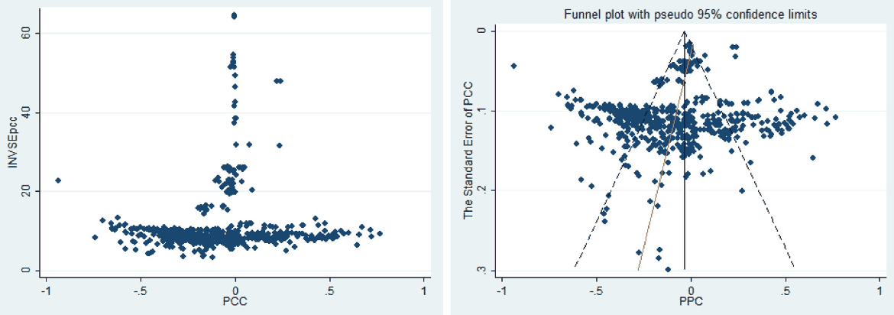

Natural Resources and Economic Growth: A Meta-Analysis
Tomas Havranek, Roman Horvath, and Ayaz Zeynalov (2016), "Natural Resources and Economic Growth: A Meta-Analysis." World Development 88, 134-151. https://doi.org/10.1016/j.worlddev.2016.07.016.
TOMAS HAVRANEK a,b, ROMAN HORVATH b and AYAZ ZEYNALOV b,*
a Czech National Bank, Czech Republic
b Charles University, Prague, Czech Republic
Abstract
An important question in development studies is how natural resources richness affects long-term economic growth. No consensus answer, however, has yet emerged, with approximately 40% of empirical papers finding a negative effect, 40% finding no effect, and 20% finding a positive effect. Does the literature taken together imply the existence of the so-called natural resource curse? In a quantitative survey of 605 estimates reported in 43 studies, we find that overall support for the resource curse hypothesis is weak when potential publication bias and method heterogeneity are taken into account. Our results also suggest that four aspects of study design are especially effective in explaining the differences in results across studies: (1) controlling for institutional quality, (2) controlling for the level of investment activity, (3) distinguishing between different types of natural resources, and (4) differentiating between resource dependence and abundance.
Keywords: natural resources, economic growth, institutions, publication selection bias, meta-analysis
1. INTRODUCTION
Little consensus exists on the effect of natural resource richness on economic growth and the mechanism underlying the effect. An influential article by Sachs and Warner (1995) argues that the impact of natural resources on growth is negative, and the finding has been labeled the "natural resource curse." More specifically, this stream of literature asserts that point-source non-renewable resources, such as minerals and fuels, can hamper growth. 1 Mehlum, Moene, and Torvik (2006) put forward that the natural resource curse only occurs in countries with low institutional quality and that with sufficient quality of institutions natural resources can foster long-term development. Other researchers emphasize that the natural resource curse is more likely to occur for certain types of natural resources (Isham, Woolcock, Pritchett, & Busby, 2005), because point natural resources such as oil are, for economic and technical reasons, more prone to rent-seeking and conflicts (Boschini, Pettersson, & Roine, 2007).
Atkinson and Hamilton (2003) and Gylfason and Zoega (2006) propose a different transmission channel and stress the role of investment. They find that natural resources crowd out physical capital and consequently have a negative effect on economic growth. Brunnschweiler and Bulte (2008) show that the quality of institutions is endogenous to natural resource richness and discriminate between natural resource dependence (flows) and natural resource abundance (stocks). They conclude that while resource dependence does not affect growth, resource abundance is growth-enhancing. Alexeev and Conrad (2009) and Cotet and Tsui (2013) also find very little evidence in support of the natural resource curse. On the contrary, examining countries with large oil endowments, they find that these countries exhibit higher income growth. In addition, Smith (2015) examines the impact of major natural resource discoveries since 1950 on GDP per capita and, applying various quasi-experimental methods such as the synthetic control method, he finds that these discoveries are associated with high growth in the long run.
According to the data we collect in this paper, the last two decades of empirical research on the effect of natural resources on economic growth have produced 43 econometric studies reporting 605 regression estimates of the effect. Approximately 40% of these estimates are negative and statistically significant, 40% are insignificant, and approximately 20% are positive and statistically significant (based on the conventional 5% significance level). Given this heterogeneity in the results, our ambition is to conduct a meta-analysis of the literature in order to shed light on two key questions: Does the natural resource curse exist in general? Can we explain why different studies come to such different conclusions? The use of meta-analysis is vital here because the method provides rigorous quantitative survey techniques and is able to disentangle the different factors driving the estimated effect (Stanley, 2001). While meta-analysis methods have been applied within economics in numerous fields, such as labor economics (Card & Krueger, 1995; Card, Kluve, & Weber, 2010; Chetty, Guren, Manoli, & Weber, 2011), development economics (Askarov & Doucouliagos, 2015; Benos & Zotou, 2014; Doucouliagos & Paldam, 2010), and international economics (Bumann, Hermes, & Lensink, 2013; Havranek & Irsova, 2011; Irsova & Havranek, 2013; Iwasaki & Tokunaga, 2014), there has been no meta-analysis examining the effect of natural resources on economic growth.
The paper is organized as follows. Section 2 discusses the primary studies on the resource-growth nexus. Section 3 describes the meta-regression framework. Section 4 describes the data set that we collect for this paper. Section 5 presents the empirical results on potential publication bias, while Section 6 focuses on explaining the differences in the results across studies. We provide concluding remarks in Section 7. Robustness checks and a list of the studies included in the meta-analysis are available in the Appendix.
2. RELATED LITERATURE
In this section we briefly discuss the relevant literature that focuses on the relation between natural resources and economic growth. For more comprehensive narrative surveys we refer the interested reader to Frankel (2012) and van der Ploeg (2011).
Sachs and Warner (1995) examine the effect of natural resources on long-term economic growth and find that resource-rich countries tend to grow more slowly than resource-scarce countries. This has become known as the natural resource curse. The literature published after Sachs and Warner (1995) primarily investigates different transmission mechanisms of how natural resources affect growth, assessing whether it is possible to avoid the natural resource curse by improving the quality of institutions, or whether the existence of the natural resource curse depends on the means of measurement and the type of natural resources.
Several studies investigate the role of institutional quality and find that the natural resource curse can be avoided if institutional quality is sufficiently high (Arezki & van der Ploeg, 2007; Boschini et al., 2007; Horvath & Zeynalov, 2014; Isham et al., 2005; Mehlum et al., 2006; Kolstad & Wiig, 2009). Most researchers examine the role of economic institutions but some studies focus on political institutions (Al-Ubaydli, 2012). Brunnschweiler and Bulte (2008) make a distinction between resource dependence (the degree to which countries depend on natural resource exports) and resource abundance (a stock measure of resource wealth) and, unlike many other studies, they treat institutions as endogenous. While they fail to find a link between resource dependence and growth, they show that resource abundance is associated with better institutions and more growth. Similar evidence is also provided by Kropf (2010). As a consequence, these results do not provide support for the existence of the natural resource curse. Alexeev and Conrad (2009, 2011) also treat institutions as endogenous and show that previously found negative effects of natural resource wealth on the quality of institutions are likely to be spurious because of the positive link between GDP and natural resources. They propose to instrument initial GDP using geographical variables to address this issue.
Sala-i-Martin and Subramanian (2013) show that new oil discoveries tend to cause real exchange rate appreciation and harm other export sectors of the economy. Gylfason (2001) and Gylfason and Zoega (2006) examine a different channel and find that natural resource richness crowds out human and physical capital, causing slower growth in the long term. The study by van der Ploeg and Poelhekke (2010) emphasizes that the volatility of output growth should be accounted for in the estimation of the resource curse. Atkinson and Hamilton (2003) and Papyrakis and Gerlagh (2006) focus on the interactions of savings and the resource curse, Baggio and Papyrakis (2010) and Hodler (2006) on the interactions of ethnic heterogeneity and the resource curse, while Anshasy and Katsaiti (2013) emphasize the role of fiscal policy. Another stream of literature examines the impact of natural resources on variables other than economic growth. Natural resource richness might induce more corruption, increase political instability and the likelihood of conflicts, and hinder the functioning of democratic institutions (Barro, 1999; Collier & Hoeffler, 2005; Jensen & Wantchekon, 2004; Ross, 2001; Tella & Ades, 1999).
In our meta-analysis we examine not only real factors, such as the role of institutional quality in the occurrence of the natural resource curse, but also the role of study design in estimating the relationship. Researchers often employ cross-sectional data to investigate the long-term effect of natural resources on growth (Arezki & van der Ploeg, 2007; Boschini et al., 2007; Brunnschweiler & Bulte, 2008; Bruckner, 2010; Brunnschweiler, 2008; Ding & Field, 2005; Gylfason, 1999; Kronenberg, 2004; Lederman & Maloney, 2003; Leite & Weidmann, 1999; Mehlum et al., 2006; Papyrakis & Gerlagh, 2007; Sachs & Warner, 1995, 2001; Sala-i-Martin & Subramanian, 2013; Stijns, 2005; Tella & Ades, 1999). Nevertheless, van der Ploeg (2011) notes that the application of cross-sectional data in growth regressions suffers from the omitted variable bias because of the correlation between past income and the omitted initial level of productivity. Since these two variables are likely to be positively correlated, the coefficient estimate for the initial level of income is upward biased, which is associated with the overestimation of the speed of convergence in growth regressions.
Lederman and Maloney (2003) estimate cross-sectional as well as panel regressions and find that the results differ. Panel regressions provide a significantly positive effect of natural resources on economic growth, while cross-sectional regressions result in negative but insignificant estimates. Tella and Ades (1999) also use both cross-sectional and panel data and find that the impact of natural resources on economic growth becomes insignificant when using panel data. Panel data have also been applied by Jensen and Wantchekon (2004), Ilmi (2007), Zhang, Xing, Fan, and Luo (2008), Murshed and Serino (2011), Boschini, Pettersson, and Roine (2013), de V. Cavalcanti, Mohaddes, and Raissi, (2011), Horvath and Zeynalov (2014), Williams (2011). Some studies employ time series techniques (Rawashdeh & Maxwell, 2013; Ogunleye, 2008). In endogenous growth models, economic growth is determined within a model by factors such as economic institutions. Brunnschweiler and Bulte (2008) estimate a three-equation model in which endogeneity of resource dependence and institutions are controlled for. They find that resource abundance has a positive impact on institutional quality and resource dependence, and that institutional quality is negatively associated with resource dependence.
The primary studies also differ with respect to the measurement of natural resource richness and GDP growth. Sachs and Warner (1995) measure natural resource richness as the share of primary exports (agriculture, fuels, and minerals) in GDP. Boschini et al. (2007), Lederman and Maloney (2003), Isham et al. (2005), Brunnschweiler and Bulte (2008) also apply this measure. Sachs and Warner (1999), Leite and Weidmann (1999), and Mehlum et al. (2006) use the share of exports of primary products in GNP. Sala-i-Martin and Subramanian (2013) and Jensen and Wantchekon (2004) use the percentage share of fuel, mineral, and metal exports in merchandise exports. Collier and Hoeffler (2005) employ the sum of resource rents as a percentage of GDP. Papyrakis and Gerlagh (2004) use the share of mineral production in GDP, while Gylfason and Zoega (2006) employ natural resource capital as a percentage of total capital. Finally, Neumayer (2004) examines whether natural resource curse still exists if natural and other capital depreciation is excluded from the calculation of GDP.
3. METHODOLOGY
Following the approach described in the guidelines for conducting meta-analyses in economics (Stanley et al., 2013), we search for potentially relevant studies in the Scopus, Google Scholar, and RePEc databases. We use the following combinations of keywords: "natural resource + economic growth," "natural resource + economic development," and "Dutch disease." We identify more than 300 journal articles and working papers, including 43 econometric studies examining the effect of natural resources on economic growth. These 43 studies report 605 different regression specifications, which enter as observations into our meta-analysis. The number of regressions reported per study ranges from one (Papyrakis & Gerlagh, 2006) to 52 (Brunnschweiler & Bulte, 2008), with a mean of 11. We report the full list of studies included in our meta-analysis in the Appendix; all data and codes we use in the paper are available in the online appendix. In this section we briefly describe the meta-analysis methods that we use in this paper, and we refer readers interested in more detailed treatment to Stanley and Doucouliagos (2012).
In general, researchers interested in the effect of natural resources on economic growth estimate a variant of the following model:
where and denote country and time subscripts; represents a measure of economic growth; represents a measure of natural resource richness; represents the institutional quality of a country and is an interaction term between natural resources and institutional quality; is a vector of control variables, such as macroeconomic conditions; and denotes an error term. Eqn. (1) describes a general panel data setting which encompasses both cross-sectional and time-series studies, differences between which we also investigate in our meta-regression analysis. We only include studies that use economic growth as the dependent variable. Other studies investigating, for example, the effect on human capital, physical capital, democracy, institutions or GDP level, are excluded to ensure a basic level of homogeneity in our data sample.
Following several previous meta-analyses (Doucouliagos, 2005; Efendic, Pugh, & Adnett, 2011; Havranek & Irsova, 2010), for the summary statistic we use the partial correlation coefficient (PCC), which can be derived as:
where denotes primary study; denotes the regression specification in each primary study; is the associated -statistic; and is the corresponding number of degrees of freedom. represents the partial correlation coefficient between natural resources and economic growth and measures the strength and direction of the association between the two when other variables are held constant.
We have to resort to calculating the PCC because the primary studies differ in terms of proxies for natural resources and economic growth, so that standardization is necessary to make the estimated effect of resources on growth comparable across studies. It is important to note that approximately one fifth of the primary studies include the interaction effect of natural resources and institutional quality in addition to the measure of natural resources. For these studies, we consider the average marginal effect of natural resources on economic growth and use the delta method to approximate the corresponding standard error. (In principle, one could also conduct separate meta-analyses of the linear and interaction terms. In our case, however, the percentage of studies using the interaction term is relatively low and would not allow for a proper meta-analysis.)
To investigate and correct for potential publication selection bias (the preference of authors, referees, or editors for a certain type of result, which will be discussed in more detail later in the paper), we use the following simple meta-regression model and examine the effect of the standard error of on the summary statistic, , itself:
where and is the regression error term. This basic meta-regression model, based on Card and Krueger (1995) and Stanley (2005), has the following underlying intuition: in the absence of publication bias, the effect should be randomly distributed across studies (when, for a moment, we abstract from the use of different methodologies in different studies and only consider the sampling error as the source of heterogeneity). If authors prefer statistically significant results, they need large estimates of the effect to offset their standard errors, which gives rise to a positive coefficient whenever the underlying true effect is different from zero. Similarly, if authors prefer a certain sign of their regression results, a correlation between the estimated effect and its standard error arises. For example, suppose that authors prefer to report negative estimates—that is, those consistent with the natural resource curse hypothesis. The heteroskedasticity of the equation ensures a negative coefficient , because with low standard errors (high precision) the reported estimates will be negative and modest (close to the underlying effect), while with large standard errors the reported estimates will be both modest and large, while no large positive estimates will be reported.
The meta-analysis literature has not converged to a consensus on what is the best method to estimate Eqn. (3). Because of the heteroskedasticity and likely within-study correlation of the reported results, most meta-analysts estimate standard errors clustered at the study level, which is an approach we also adopt. Apart from the basic OLS with clustered standard errors, however, we also report fixed effects estimation (OLS with study dummies), the so-called mixed effects (study-level random effects estimated by maximum likelihood methods to take into account the unbalancedness of the data), and instrumental variable estimates, which we describe below. Each of these approaches has its pros and cons. For example, fixed effects control for unobservable study-level characteristics, but the use of fixed effects therefore does not allow us to investigate the impact of some important features of studies (such as the number of citations). Mixed effects are more flexible in this respect, but with many explanatory variables in the models the exogeneity conditions underlying mixed effects are unlikely to hold. Apart from different approaches to identification, we also use several different weighting schemes.
To reduce heteroskedasticity and obtain more efficient estimates, Stanley and Doucouliagos (2015) recommend using Eq. (3) weighted by the inverse variance of the estimated , because the variance is a measure of heteroskedasticity in this case. Therefore, a weighted least squares (WLS) version of Eqn. (3) is obtained by dividing each variable by :
where measures the statistical significance of the partial correlation coefficient. provides an estimate of the underlying effect of natural resources on economic growth corrected for any potential publication selection bias (or, alternatively, we can think of it as the effect conditional on maximum precision in the literature). The coefficient assesses the extent and direction of publication selection. As a robustness check, in the Appendix in Table 5 we also present non-weighted regressions and regressions weighted by the inverse of the number of estimates reported in each study—to give each study the same weight.
The univariate regression presented above may provide biased estimates if important moderator variables are omitted (Doucouliagos, 2011). Suppose, for example, that a specific method choice made by the authors of primary studies affects both the standard error and the reported point estimate in the same direction. Then the standard error variable will be correlated with the error term, and we obtain a biased estimate of (Havranek, 2015). A solution is to use an instrument for the standard error that is correlated with the standard error but not with method choices. Such an instrument can be based on the number of observations, because larger studies are, on average, more precise, and the number of observations is little correlated with method choices. We use the inverse of the square root of the number of degrees of freedom, as this number is directly proportional to the estimated standard error. An alternative is to add additional moderator variables to Eqn. (4), after which we obtain the following model to examine the driving forces of the heterogeneity in the estimated effect of natural resource richness on economic growth:
where represents the number of moderator variables weighted by , is the coefficient on the corresponding moderator variables, and denotes the error term.
4. DATA
The explanatory variables used in this meta-regression analysis are listed and defined in Table 1. These variables represent potential sources of heterogeneity in the results of primary studies. Table 1 classifies the characteristics of primary studies into several categories, such as macroeconomic conditions, the choice of dependent and independent variables, and estimation methods.
(a) Outcome characteristics
We observe that the typical estimate of the effect of natural resources on economic growth is negative (−2.39) but the standard error of this estimate is large (5.14)—since the reported estimates are not strictly comparable, however, it makes more sense to look at partial correlation coefficients. The mean PCC is −0.08, which would be classified as a small effect according to the guidelines by Doucouliagos (2011) for the interpretation of partial correlations in economics. The mean number of observations in primary studies is 198, and a typical study includes about eight explanatory variables (this number does not include dummy variables that are sometimes included, typically for the sake of fixed effects, because exact statistics on fixed effects are not always reported). The mean number of time periods is low (4.34) because most of the primary studies estimate cross-sectional regressions for a wide set of countries.
(b) Publication characteristics
The literature on the effect of natural resources on growth is alive and well, with more and more studies published each year—the mean primary study in our sample was only published in 2007. The studies are mostly published in peer-reviewed journals (40 out of our 43 primary studies are published in a journal, and the other three are working papers from institutions such as the National Bureau for Economic Research and International Monetary Fund). The primary outlet for this literature is World Development, with seven primary studies. We also control for journal quality by including the recursive impact factor from RePEc and the number of citations from Google Scholar. We argue that these measures capture aspects of study quality not covered by method characteristics: some aspects of methodology are employed only in a single study, which does not allow us to include the corresponding control variable because it would be strongly correlated with the constant in the regression. We select the RePEc database for journal ranking because it covers virtually all journals and working paper series in economics; Google Scholar, on the other hand, is the richest database, providing citation counts for each research item.
(c) Institutional quality
As discussed in the related literature section, several articles have demonstrated that the quality of domestic institutions is likely to be an important factor influencing the magnitude as well as the direction of the effect of natural resources on economic growth. Approximately two thirds of the primary studies control for institutional quality, and approximately one third additionally include the interaction effect of institutional quality and natural resources. Interestingly, we find that primary studies use nearly 20 different approaches to measure institutional quality. The measures of economic institutions are used more commonly than the political institutions. As regards economic institutions, primary studies use all six institutional measures from the World Bank dataset and less frequently, they also use the institutional measures reported by the International Country Risk Guide. Some studies use various averages of these measures.
(d) Macroeconomic conditions
The primary studies typically control for several macroeconomic characteristics, such as the level of schooling, economic openness, and investment activity. It is striking that approximately one quarter of the primary studies do not control for the initial level of GDP despite the voluminous theoretical and empirical research which suggests that initial GDP is one of the key factors driving subsequent economic growth, as poorer economies take the benefit of innovations already developed in advanced countries (Durlauf, Kourtellos, & Tan, 2008).
(e) The choice of the dependent variable
While the primary studies commonly employ GDP growth as the dependent variable, non-resource GDP growth (the part of output not directly influenced by the extraction of resources) is also sometimes used. In approximately two thirds of the studies these two measures are reported in the form of per capita (which is appropriate if the population growth is not high). Therefore, we examine primary studies with growth as the dependent variable but never the primary studies with the level of income as the dependent variable.
| Variable | Definition | Mean | St. Dev. | Min | Max |
|---|---|---|---|---|---|
| Outcome characteristics | |||||
| TSTAT | Estimated t-statistics of effect size | −0.72 | 2.76 | −21.29 | 11.55 |
| PCC | Partial correlation coefficient | −0.08 | 0.27 | −0.94 | 0.77 |
| INVSEpcc | Inverse standard error of PCC | 11.41 | 8.22 | 3.34 | 64.72 |
| SXP | Natural resource effect size | −2.39 | 7.97 | −85.62 | 56.92 |
| SXPSE | Standard error of effect size | 5.14 | 24.11 | 0.00 | 367.37 |
| DF | Logarithm of number of degrees of freedom | 4.52 | 0.93 | 2.48 | 8.34 |
| NO.OBS | Logarithm of number of observations | 4.62 | 0.89 | 3.04 | 8.34 |
| NO.EXPL.VARS | Number of explanatory variables included | 8.03 | 4.72 | 1.00 | 21.00 |
| NO.COUNTRY | Logarithm of number of countries | 4.14 | 0.81 | 0.69 | 5.04 |
| NO.TIME | Logarithm of number of years | 1.09 | 0.86 | 0.69 | 3.81 |
| Publication characteristics | |||||
| YEAR | Logarithm of publication year | 7.61 | 0.00 | 7.60 | 7.61 |
| IMPACT.FACTOR | Recursive impact factor of journal from RePEc | 0.15 | 0.24 | 0.00 | 0.87 |
| CITATIONS | Logarithm of number of Google Scholar citations | 4.22 | 2.00 | 0.00 | 8.09 |
| REVIEWED | Dummy, 1 if published in peer-review journal, 0 otherwise | 0.73 | 0.44 | ||
| Institutional quality | |||||
| INSTITUTION | Dummy, 1 if institutional variable is included, 0 otherwise | 0.70 | 0.40 | ||
| INTERACTION | Dummy, 1 if interaction term is included, 0 otherwise | 0.34 | 0.44 | ||
| Macroeconomic conditions | |||||
| TOT | Dummy, 1 if terms of trade are included, 0 otherwise | 0.13 | 0.33 | ||
| OPENNESS | Dummy, 1 if trade openness is included, 0 otherwise | 0.67 | 0.47 | ||
| INITIAL GDP | Dummy, 1 if initial GDP is included, 0 otherwise | 0.79 | 0.41 | ||
| INVESTMENT | Dummy, 1 if investment is included, 0 otherwise | 0.62 | 0.48 | ||
| SCHOOLING | Dummy, 1 if schooling is included, 0 otherwise | 0.49 | 0.50 | ||
| Dependent variable choice | |||||
| GDP PER CAPITA | Dummy, 1 if dependent is measured with per capita level, 0 otherwise | 0.62 | 0.49 | ||
| GDP GROWTH | Dummy, 1 if dependent is measured with growth, 0 otherwise | 0.85 | 0.35 | ||
| NON-RESOURCE GDP | Dummy, 1 if dependent is measured with non-resource GDP, 0 otherwise | 0.03 | 0.17 | ||
| Natural-resource variable choice | |||||
| RES.ABUNDANCE | Dummy, 1 if effect size is measured as resource abundance, 0 otherwise | 0.16 | 0.36 | ||
| NAT.RES.EXPORT | Dummy, 1 if effect size is measured with exports, 0 otherwise | 0.70 | 0.46 | ||
| OIL-RESOURCE | Dummy, 1 if effect size is measured with petroleum/fuel/oil, 0 otherwise | 0.15 | 0.36 | ||
| Dataset type | |||||
| CROSS | Dummy, 1 if dataset type is cross-sectional, 0 otherwise | 0.81 | 0.39 | ||
| PANEL | Dummy, 1 if dataset type is panel, 0 otherwise | 0.18 | 0.38 | ||
| TIME.SERIES | Dummy, 1 if dataset type is time series, 0 otherwise | 0.01 | 0.08 | ||
| REGION | Dummy, 1 if dataset includes all countries, 0 otherwise | 0.86 | 0.35 | ||
| Estimation methods | |||||
| ENDOGENEITY | Dummy, 1 if endogeneity is controlled for, 0 otherwise | 0.41 | 0.49 | ||
| OLS | Dummy, 1 if method type is OLS, 0 otherwise | 0.52 | 0.49 | ||
| Dataset time period | |||||
| DUMMY60 | Dummy, 1 if time period in 1960s, 0 otherwise | 0.02 | 0.15 | ||
| DUMMY70 | Dummy, 1 if time period in 1970s, 0 otherwise | 0.36 | 0.48 | ||
| DUMMY80 | Dummy, 1 if time period in 1980s, 0 otherwise | 0.29 | 0.46 | ||
| DUMMY90 | Dummy, 1 if time period in 1990s, 0 otherwise | 0.26 | 0.44 | ||
| DUMMY00 | Dummy, 1 if time period in 2000s, 0 otherwise | 0.06 | 0.23 |
Notes. Method characteristics are collected from studies estimating the effect of natural resources on economic growth. The list of studies is available in the Appendix; the complete data set is available in the online appendix.
(f) The choice of the natural resource variable
The studies differ in the proxies they employ for natural resources. The ratio of natural resource exports to GDP is often used as a measure of natural resource richness. Approximately 15% of the primary studies focus on oil and do not take into account other fuels or minerals. Approximately 15% of the primary studies use the measure of resource abundance (resource endowment exogenous to economic activity) instead of the typically used resource dependence (measures endogenous to economic activity).
(g) Dataset type
Despite the fact that van der Ploeg (2011) emphasizes that the application of cross-sectional data in growth regressions is likely to suffer from omitted variable bias, approximately 80% of regression specifications in the primary studies on the resource-growth nexus are based on cross-sectional data. This is largely motivated by data availability. Panel structures are less common (less than 20%) and time series evidence is almost non-existent.
(h) Estimation method
Approximately one half of the primary studies is based on OLS regressions (more specifically, any specification giving rise to possible endogeneity) and approximately one third allows for endogeneity of regressors by employing a type of instrumental variable estimator or by using lagged measures of natural resources. Other methods such as vector error correction model have been used infrequently.
(i) Dataset time period
Finally, we create dummy variables and classify whether the data for primary studies primarily come from the 1960s, 1970s, 1980s, 1990s, or 2000s to control for potential time effects (some studies cover more than one decade in their data sets). An alternative is to include directly the mean year of the data period, but we prefer to focus on decade dummies in order to control for potential time breaks in the effect of natural resources on growth.
Table 2 presents an initial analysis of the reported estimates of the natural resource curse. The arithmetic mean yields a partial correlation coefficient of −0.078 with a 95% confidence interval [−0.099, −0.056]. The random-effects estimator (allowing for random differences across studies) and fixed-effect estimator (weighted by the inverse variance) estimates provide a similar picture, suggesting that the effect of natural resources on growth is negative and statistically significant, although negligible to small according to the guidelines by Doucouliagos (2011). Nevertheless, these simple estimators do not account for potential publication selection and the influence of method choices, some of which may be considered misspecifications that have systematic effects on the results.
5. PUBLICATION BIAS
Publication selection occurs when researchers, referees, or editors prefer certain types of estimates, typically statistically significant results or those that are in line with the prevailing theory (Stanley, 2005). Strong publication bias was found, for example, by Havranek and Irsova (2012) in the literature on foreign direct investment spillovers, by Havranek, Irsova, and Janda (2012) in the literature estimating the price elasticity of gasoline demand, and by Havranek, Irsova, Janda, and Zilberman (2015) among the studies estimating the social cost of carbon emissions. If the literature on the natural resource curse suffers from some sort of publication selection, it is important to account for it in order to uncover the underlying effect of natural resources on economic growth. For example, if negative estimates of the relationship are reported preferentially, the small negative mean effect computed in the previous section may be entirely due to publication bias.
In line with the previous meta-analysis literature (Doucouliagos & Stanley, 2009), we first generate funnel plots to assess the degree of publication selection visually. The horizontal axis of the funnel plot displays the size of the effect (partial correlation coefficients) of natural resources on economic growth and the vertical axis displays precision (inverse standard errors) derived from the corresponding regression specification of a given primary study. The funnel plot is available in the left panel of Figure 1. In the absence of publication bias, the funnel plot should be symmetrical—the most precise estimates will be close to the underlying effect, less precise estimates will be more dispersed, and both negative and positive estimates with low precision (and thus low statistical significance) will be reported. In our case, the left-hand side of the funnel appears to be somewhat heavier than the right-hand side. This finding suggests that negative estimates, i.e., those suggesting the natural resource curse, are slightly preferred for reporting and publication.
The right panel of Figure 1 presents a variant of the funnel plot resembling more closely the simple meta-regression model presented earlier in this paper. The vertical line denotes an estimate of the mean effect of natural resources on economic growth derived using fixed effects. The two dashed lines that join the vertical line at the top of the funnel denote the boundaries of conventional statistical significance at the 5% level: estimates outside these boundaries are statistically significantly different from the underlying effect as computed by fixed effects. These outlying estimates form, apparently, much more than 5% of the data. This could indicate publication bias in favor of statistically significant estimates, but also heterogeneity in data and methods. The remaining dashed line visualizes a regression line from our simple meta-regression model when the effect size is regressed on the standard error: the slope is negative, which suggests publication bias, and the intercept is slightly above zero, which indicates that publication bias is responsible for the mean reported negative relationship between natural resources and growth. In the next step we provide a formal test of publication selection bias.
To assess the extent of publication bias, we estimate Eqn. (3); that is, we regress the partial correlation coefficient on its standard error using the so-called funnel asymmetry test (note the relation between these regressions and the right-hand panel of Figure 1). A negative coefficient attached to the standard error suggests there is some preference in the literature for results documenting the natural resource curse. The estimated constant provides the true (publication selection-free) effect of natural resources on economic growth. For example, if the constant is negative, the coefficient suggests the existence of the natural resource curse in line with Sachs and Warner (1995). We present the results in Table 3. We use four different econometric methods: ordinary least squares with clustered standard errors, instrumental variables estimation, fixed effects estimation, and mixed effects
| Explanation | Estimate | Standard error | 95% confidence | Interval |
|---|---|---|---|---|
| Simple average of PCC | −0.078 | 0.011 | −0.099 | −0.056 |
| Fixed-effect average PCC | −0.092 | 0.002 | −0.096 | −0.088 |
| Random-effect average PCC | −0.092 | 0.010 | −0.111 | −0.073 |
Notes. Simple average represents the arithmetic mean. The fixed-effect estimator uses the inverse of the variance as the weight for the PCC. The random-effects specification additionally considers between-study heterogeneity.

maximum likelihood estimation. The results vary across specifications. The estimated constant is also not robust to different econometric methods.
In Table 5 in the Appendix we present two robustness checks. In the first case, we run the specification without employing any weights. In the second case, we weight the observations by the inverse of the number of regressions reported per study to give each study the same weight. The results largely confirm our baseline results discussed in the previous paragraph. We hypothesize that the instability of these bivariate regression results stems from the omission of some important moderator variables (Doucouliagos & Stanley, 2009), which we address in the following section. In any case, the visual and regression analyses taken together do not provide evidence for the natural resource curse hypothesis, and also offer only limited evidence for any substantial publication bias.
6. EXPLAINING THE DIFFERENCES IN ESTIMATES
Table 4 presents the results of multivariate meta-regression, for which we employ four different estimation methods to explain the heterogeneity of the estimated effects of natural resources on economic growth reported in primary studies.
Our results do not suggest any evidence of publication selection bias once the characteristics of studies and estimates are taken into account. Therefore, it seems that the apparent (but slight) asymmetry of the funnel plot described in the previous section results from method heterogeneity across studies or individual estimates rather than from systematic publication selection.
| Panel A | Coefficient | t-Stat | p-Value | Coefficient | t-Stat | p-Value |
|---|---|---|---|---|---|---|
| Clustered OLS | IV estimation | |||||
| SE (publication selection) | −1.016*** | −5.18 | 0.000 | −1.234*** | −4.81 | 0.000 |
| Constant (true effect) | 0.026*** | 1.69 | 0.099 | 0.038*** | 2.41 | 0.016 |
| Model diagnostics | ||||||
| Number of observations = 605 | Number of observations = 605 | |||||
| F-test: F(1,42) = 26.87 | F-test: F(1, 42) = 23.11 | |||||
| Ho: Precision = 0, Prob > F = 0.00 | Ho: Precision = 0, Prob > F = 0.00 | |||||
| Ramsey RESET test: F(3, 600) = 4.21 | Under-identification test = 1221.39 | |||||
| Ho: No omitted variables, Prob > F = 0.006 | Prob > = 0.000 | |||||
| R-squared = 0.04 | R-squared = 0.04 | |||||
| Panel B | Coefficient | t-Stat | p-Value | Coefficient | z-Stat | p-Value |
| Fixed effects | Mixed-effects ML regression | |||||
| SE (publication selection) | −0.011 | −0.58 | 0.563 | 0.090 | 0.14 | 0.892 |
| Constant (true effect) | −0.589*** | −2.64 | 0.011 | −0.133 | 1.43 | 0.153 |
| Model diagnostics | ||||||
| Number of observations = 605 | Number of observations = 605 | |||||
| Number of groups = 43 | Number of groups = 43 | |||||
| F(1, 32) = 0.34 | Wald test: = 0.02 | |||||
| Prob > F = 0.56 | Prob > = 0.89 | |||||
| R-squared = 0.14 | R-squared = 0.11 |
Notes. The dependent variable is PCC; the estimated equation is . All results are weighted by the inverse variance. The standard errors of the regression parameters are clustered at the study level. Panel A, columns (2)–(4) represent OLS with cluster-robust standard errors at the study level; columns (5)–(7) represent IV estimation, where the instrumental variable is the inverse of the square root of the number of degrees of freedom. Panel B, columns (2)–(4) represent fixed-effects estimation at the study level; columns (5)–(7) represent mixed-effects ML regression. The reported t-statistics are based on heteroskedasticity cluster-robust standard errors.
| Variable | Clustered OLS | IV regression | Fixed effects | Mixed-effects ML |
|---|---|---|---|---|
| NO.EXPL.VARS | −0.042 | −0.043 | 0.046 | 0.054 |
| (0.03) | (0.04) | (0.05) | (0.06) | |
| NO.COUNTRY | 0.074*** | 0.052** | 0.023 | 0.005 |
| (0.03) | (0.02) | (0.05) | (0.06) | |
| NO.TIME | 0.063*** | 0.030* | 0.040 | 0.057* |
| (0.02) | (0.02) | (0.03) | (0.03) | |
| Publication characteristics | ||||
| YEAR | 29.171*** | 25.574*** | −18.804 | |
| (7.40) | (7.16) | (19.305) | ||
| IMPACT.FACTOR | 0.306** | 0.298** | 1.435** | |
| (0.09) | (0.10) | (0.11) | ||
| CITATIONS | 0.019** | 0.016* | −0.703*** | |
| (0.01) | (0.01) | (0.22) | ||
| REVIEWED | −0.102*** | −0.107*** | −2.042*** | |
| (0.04) | (0.04) | (0.73) | ||
| Institutional quality | ||||
| INSTITUTION | 0.049* | 0.057** | −0.017 | −0.034 |
| (0.03) | (0.03) | (0.03) | (0.04) | |
| INTERACTION | 0.038* | 0.044* | 0.016 | 0.019 |
| (0.02) | (0.02) | (0.06) | (0.07) | |
| Macroeconomic conditions | ||||
| TOT | 0.019 | 0.031 | 0.001 | −0.059 |
| (0.03) | (0.03) | (0.06) | (0.05) | |
| OPENNESS | 0.024 | 0.022 | −0.014 | 0.002 |
| (0.03) | (0.03) | (0.02) | (0.02) | |
| INITIAL GDP | 0.010 | 0.022 | −0.013 | 0.033 |
| (0.04) | (0.04) | (0.03) | (0.03) | |
| INVESTMENT | −0.062** | −0.076** | −0.199* | −0.054 |
| (0.03) | (0.03) | (0.10) | (0.06) | |
| SCHOOLING | 0.026 | 0.040 | 0.266 | 1.358* |
| (0.02) | (0.03) | (0.21) | (0.71) | |
| Dependent variable choice | ||||
| GDP PER CAPITA | −0.000 | 0.005 | 0.066 | −0.039 |
| (0.02) | (0.02) | (0.06) | (0.05) | |
| GDP GROWTH | 0.046 | 0.061 | 0.093 | −0.055 |
| (0.05) | (0.05) | (0.12) | (0.05) | |
| NON-RESOURCE GDP | −0.035 | −0.051 | −0.004 | 0.005 |
| (0.04) | (0.04) | (0.03) | (0.04) | |
| Natural-resource variable choice | ||||
| RES.ABUNDANCE | 0.220*** | 0.196*** | 0.142** | 0.123*** |
| (0.06) | (0.06) | (0.07) | (0.03) | |
| NAT.RES.EXPORT | −0.048*** | −0.050*** | −0.017 | 0.001 |
| (0.02) | (0.02) | (0.02) | (0.02) | |
| OIL-RESOURCE | 0.181*** | 0.179*** | 0.191*** | 0.176*** |
| (0.04) | (0.04) | (0.06) | (0.06) | |
| Dataset type | ||||
| CROSS | 0.090 | −0.002 | 0.048 | |
| (0.20) | (0.22) | (1.24) | ||
| PANEL | 0.374* | 0.221 | 0.237 | |
| (0.21) | (0.22) | (1.26) | ||
| REGION | −0.156*** | −0.156*** | −0.243 | |
| (0.05) | (0.05) | (1.01) | ||
| Estimation methods | ||||
| OLS | 0.226*** | 0.197*** | 0.159 | 0.326*** |
| (0.06) | (0.05) | (0.18) | (0.11) | |
| ENDOGENEITY | 0.202*** | 0.178*** | 0.159 | 0.328*** |
| (0.06) | (0.05) | (0.17) | (0.11) | |
| Dataset time period | ||||
| DUMMY60 | 0.044 | 0.051 | −0.071 | −0.015 |
| (0.05) | (0.05) | (0.07) | (0.03) |
| Variable | Clustered OLS | IV regression | Fixed effects | Mixed-effects ML |
|---|---|---|---|---|
| DUMMY80 | 0.055 | 0.062 | 0.256* | 0.176*** |
| (0.04) | (0.04) | (0.13) | (0.04) | |
| DUMMY90 | 0.141*** | 0.160*** | 0.415*** | 0.249*** |
| (0.04) | (0.04) | (0.12) | (0.04) | |
| DUMMY00 | 0.126** | 0.145** | 0.375*** | 0.030 |
| (0.06) | (0.06) | (0.07) | (0.04) | |
| SE | 3.186*** | 1.526*** | −38.087 | 2.458 |
| (0.90) | (0.58) | (75.15) | (1.86) | |
| CONSTANT | −222.993*** | −195.220*** | 3.186** | 143.094 |
| (56.39) | (54.49) | (1.20) | (146.88) | |
| NO.OBSERVATION | 605 | 605 | 605 | 605 |
| F/Wald-test | 45.50 | 47.00 | 14.23 | 123.43 |
| R-Squared | 0.62 | 0.61 | 0.37 | 0.58 |
Notes. The dependent variable is PCC; the estimated equation is . All results are weighted by the inverse variance. Column (2) represents OLS with cluster-robust standard errors at the study level. Column (3) represents IV estimation, where SE is instrumented with the inverse of the square root of the number of degrees of freedom. Column (4) represents fixed-effects estimation at the study level. Column (5) represents mixed-effects ML regression. ***, **, and * denote statistical significance at the 1%, 5%, and 10% level.
We discussed earlier that the mean effect of natural resources on growth is weak. Table 4 shows, however, that some of the method choices have a strong impact on the reported coefficient, so the underlying conclusion about the resources-growth nexus depends on what methodology one prefers. Because of the importance of the individual aspects of estimation design for the results, we discuss them in detail in the following paragraphs. It is also worth noting that the explanatory power of the regression rises significantly when the additional variables are included; compared with Table 3, increases by about 0.5.
Concerning data characteristics, we find that the number of time periods in primary studies tend to be positively associated with the estimated effect of natural resources on economic growth. This result suggests that it might be worthwhile to focus on expanding the time dimension when examining the natural resource curse (we have noted that most of the primary studies are of a cross-sectional nature), as it takes some time for the effects of natural resources to become visible in GDP growth. Our results also suggest some evidence that more recent studies find the natural resource curse less often. Primary studies published in higher ranked journals are less likely to report natural resource curse.
Next, the control for institutional quality and the inclusion of an interaction term between institutional quality and natural resources has a systematic effect on the reported results. The effect is positive, which means that studies which control for institutions and the interaction tend to find a less negative impact of resources on growth. To be more specific, our findings based on the OLS meta-regression (the first column of the table) suggest that studies controlling for institutions (holding other study and estimate characteristics fixed at the sample means and computing the predicted PCC) typically find partial correlation coefficients of about 0.25, implying a moderate positive effect according to Doucouliagos’s guidelines. This result gives some support to the hypothesis that once a country exhibits a sufficient level of institutional quality, natural resources contribute positively to economic growth, which is the case, for instance, of Norway (Mehlum et al., 2006).
Concerning the measurement of natural resources, the dummy variable for oil resources is systematically positive, supporting the notion that oil is less prone to the natural resource curse than other substances, such as precious metals or diamonds. The OLS specification of our meta-regression analysis suggests that studies exploring the effect of oil tend to find partial correlation coefficients close to 0.3, which implies a moderate impact of natural resources on economic growth. Indeed, even the simple correlation coefficient between the oil dummy and the partial correlation coefficient in our sample is significantly positive with a value of 0.49. These results are in line with the literature showing that many countries with new oil discoveries exhibit higher growth for a sustained period of time (Alexeev & Conrad, 2009; Smith, 2015). Importantly, the result is also consistent with Boschini et al. (2007), who show that the degree of technical appropriability (i.e., that some substances, such as precious metals and diamonds, are, for economic or technical reasons, more prone to rent-seeking and conflicts) matters for the occurrence of the natural resource curse. We also find that the dummy variable for resource abundance is positive and statistically significant showing that it is important to differentiate between resource dependence and resource abundance (Brunnschweiler & Bulte, 2008). The studies using the resource abundance measure are more likely to report the positive effect of natural resources on economic growth (Brunnschweiler & Bulte, 2008; Alexeev & Conrad, 2009; Smith, 2015).
Concerning controls for macroeconomic conditions, our results suggest that the primary studies underestimate the importance of controlling for investment; approximately 40% of primary studies do not condition for investment activity, but we find that controlling for investment affects the resource-growth nexus significantly and negatively. According to our OLS meta-regression, a typical study that controls for investment finds a negative effect of natural resources on economic growth. The implied partial correlation coefficient, however, is only about −0.06, which in absolute value is less than the threshold recommended by Doucouliagos (2011) for interpretation as a small effect. In general, the result provides some support to the previous evidence showing that natural resources tend to crowd out investment activity (Gylfason & Zoega, 2006).
Next, we find that the dummy variable for the data from the 1990s is statistically significant and positive. The finding indicates that the literature which primarily uses the data for the 1990s finds a less negative (or more positive) effect of natural resources on economic growth. Holding other estimate and study characteristics constant, using data for the 1990s implies partial correlations of about 0.3, suggesting a positive and moderately strong effect of resources on growth. We hypothesize that the positive effect for the 1990s stems from the fact that this period has been associated with marked substantial improvements in technology, infrastructure, education, investment allocation, and liberalization of financial markets in resource-rich (especially oil) countries.2
Moreover, our results suggest that articles published in journals are more likely to report positive effects of natural resources on economic growth (the difference in terms of the reported partial correlation coefficients is about 0.3), but we do not intend to overemphasize this finding given that very few of the studies in our sample are unpublished manuscripts. Moreover, our previous analysis indicates relatively little evidence for publication bias. Other moderator variables are only significant in specific regressions and therefore their effect does not seem to be systematic.
In addition, we conduct a number of robustness checks. In Table 6 in the Appendix we present the results without weighting the estimates by the inverse of their estimated variance. In these robustness checks we run the same regressions with identical moderator variables and identical econometric methods. Next, we also run the same four specifications in a setting where the weighting is based on the inverse of the number of regression specifications per primary study instead of the inverse variance of the estimates to give each study the same importance in the analysis. The results are available in Table 7 in the Appendix. The robustness checks are largely in line with our main baseline findings presented in the main text. The exception is investment, which is no longer statistically significant. Next, we also restrict our sample to the primary studies, which use the measure of mineral resources. We present the partial correlation coefficients results (in Table 8), funnel plot (in Figure B1) and meta-analysis (in Table 9) in the Appendix. Overall, the results suggest that the effect of natural resources on economic growth for this restricted sample is approximately zero and publication bias is not present.
We also experimented with Bayesian model averaging for applications of the method in meta-analysis, see (Havranek, Horvath, Irsova, & Rusnak, 2015; Havranek, Rusnak, & Sokolova, 2015; Havranek & Sokolova, 2016; Havranek & Irsova, in press), because our regressions include many explanatory variables and are thus subject to model uncertainty. While we are not able to emulate the instrumental variable specification using BMA, the Bayesian analogy of our OLS specification gives results similar to our baseline.
7. CONCLUDING REMARKS
In this paper we take stock of two decades of empirical research examining the existence of the natural resource curse. The previous literature has documented a great deal of heterogeneity in the effect of (point-source non-renewable) natural resources on economic growth. We collect 43 studies providing 605 different regression specifications and find that approximately 40% of them report a negative and statistically significant effect, another 40% report no effect, and the remaining 20% report a positive and statistically significant effect of natural resources on economic growth.
After reviewing the apparently mixed results reported in the literature, we ask two principle questions. First, what is the mean effect of natural resources on economic growth? A lot of research work has been devoted to the topic, and the literature deserves more than a statement that the results are mixed. A quantitative synthesis of the literature can uncover economists’ best guess concerning the resources-growth nexus, and support or reject the findings of Sachs and Warner (1995), the most influential study in this field, which finds evidence for the natural resource curse. Second, why do different researchers obtain such different results? Systematic literature review methods allow us to formally trace the sources of heterogeneity to the data and methods used in estimations.
To summarize the literature quantitatively, we use meta-analysis techniques (Stanley, 2001) and find that the mean effect of natural resources on economic growth is negligible (negative or positive depending on the particular meta-analysis model). In addition, we find little evidence for publication selection, i.e., that authors, referees, or editors prefer some types of findings (such as statistically significant evidence in favor of the natural resource curse) at the expense of other results. Next, our meta-regression analysis also shows that several factors are systematically important for the estimated effect of natural resources on economic growth. We find that it matters for the results whether primary studies control for the investment level, control for the quality of institutions, include an interaction term between institutional quality and natural resource richness, distinguish between different types of natural resources, and differentiate between resource dependence and resource abundance.
When primary studies explicitly consider the interaction between institutional quality and natural resources, they are less likely to find evidence consistent with the natural resource curse. Well-functioning institutions eliminate the potentially negative effect of natural resources, as they reduce the extent of rent-seeking activities often associated with point-source natural resources (Boschini et al., 2007; Mehlum et al., 2006). Next, primary studies that include investment as a control variable are more likely to find the natural resource curse. This result is broadly consistent with the available literature, which reports that natural resources crowd out physical capital (Atkinson & Hamilton, 2003; Gylfason & Zoega, 2006). Finally, we also find that when natural resource richness is measured solely on the basis of oil endowment (and not using other substances such as diamonds or precious metals), support for the natural resource curse is less common. This result highlights the role of the measurement of natural resource richness, as different natural resources have different degrees of “technical appropriability” (Boschini et al., 2007). Our results in this respect are consistent with several recent studies showing that large oil discoveries tend to be associated with sustained economic growth (Alexeev & Conrad, 2009; Cotet & Tsui, 2013; Smith, 2015). Similarly, our results also suggest that the primary studies, which employ the measure of resource abundance, are more likely to find the positive effect of natural resources on economic growth (Alexeev & Conrad, 2009; Brunnschweiler & Bulte, 2008; Smith, 2015).
In terms of policy implications, the focus on improving institutions in developing countries will not strike our readers as new, since it has been a recurring theme in development studies, and not only in relation to the effects of natural resources. Compared to individual empirical papers, though, our meta-analysis approach is more systematic and allows for robust inference based on a vast literature that lacks consensus on the importance of institutions. The approach also points to several method choices that have a strong and systematic effect on the reported results (data period under investigation, treatment of institutions, control for investment, definition of natural resources), and our recommendation to researchers is to report robustness checks with respect to these aspects of methodology.
ENDNOTES
- Note that given our focus on the natural resource curse, we study the literature primarily examining point-source non-renewable resources—those extracted from a narrow geographic or economic base, as well as primary exports as a percentage of GDP, GNP, or total exports.
- We thank an anonymous referee for pointing out this interpretation.
REFERENCES
Some entries below were printed without a link. Where a Crossref record matches one and no other record plausibly could, its DOI is shown; ambiguous references are left as they were printed.
- Al-Ubaydli, O. (2012). Natural resources and the tradeoff between authoritarianism and development. Journal of Economic Behavior & Organization, 81(1), 137–152. 10.1016/j.jebo.2011.09.009
- Alexeev, M., & Conrad, R. (2009). The elusive curse of oil. The Review of Economics and Statistics, 91(3), 586–598. 10.1162/rest.91.3.586
- Alexeev, M., & Conrad, R. (2011). The natural resource curse and economic transition. Economic Systems, 35(4), 445–461. 10.1016/j.ecosys.2010.10.003
- Anshasy, A. A. E., & Katsaiti, M.-S. (2013). Natural resources and fiscal performance: Does good governance matter? Journal of Macroeconomics, 37, 285–298. 10.1016/j.jmacro.2013.05.006
- Arezki, R., & van der Ploeg, F. (2007). Can the natural resource curse be turned into a blessing? The role of trade policies and institutions. In CEPR discussion papers 6225. C.E.P.R. 10.5089/9781451866193.001
- Askarov, Z., & Doucouliagos, H. (2015). Development aid and growth in transition countries. World Development, 66(C), 383–399. 10.1016/j.worlddev.2014.08.014
- Atkinson, G., & Hamilton, K. (2003). Savings, growth and the resource curse hypothesis. World Development, 31(11), 1793–1807. 10.1016/j.worlddev.2003.05.001
- Baggio, J. A., & Papyrakis, E. (2010). Ethnic diversity, property rights, and natural resources. The Developing Economies, 48(4), 473–495. 10.1111/j.1746-1049.2010.00116.x
- Barro, R. J. (1999). Determinants of democracy. Journal of Political Economy, 107(S6), S158–S183. 10.1086/250107
- Benos, N., & Zotou, S. (2014). Education and economic growth: A meta-regression analysis. World Development, 64(C), 669–689, http://ideas.repec.org/a/eee/wdevel/v64y2014icp669-689.html.
- Boschini, A., Pettersson, J., & Roine, J. (2013). The resource curse and its potential reversal. World Development, 43(C), 19–41. 10.1016/j.worlddev.2012.10.007
- Boschini, A. D., Pettersson, J., & Roine, J. (2007). Resource curse or not: A question of appropriability. Scandinavian Journal of Economics, 109(3), 593–617. 10.1111/j.1467-9442.2007.00509.x
- Bruckner, M. (2010). Natural resource dependence, non-tradables, and economic growth. Journal of Comparative Economics, 38(4), 461–471.
- Brunnschweiler, C. N. (2008). Cursing the blessings? Natural resource abundance, institutions, and economic growth. World Development, 36(3), 399–419. 10.1016/j.worlddev.2007.03.004
- Brunnschweiler, C. N., & Bulte, E. H. (2008). The resource curse revisited and revised: A tale of paradoxes and red herrings. Journal of Environmental Economics and Management, 55(3), 248–264. 10.1016/j.jeem.2007.08.004
- Bumann, S., Hermes, N., & Lensink, R. (2013). Financial liberalization and economic growth: A meta-analysis. Journal of International Money and Finance, 33(C), 255–281, http://ideas.repec.org/a/eee/jimfin/v33y2013icp255-281.html.
- Card, D., Kluve, J., & Weber, A. (2010). Active labour market policy evaluations: A meta-analysis. Economic Journal, 120(548), F452–F477. 10.1111/j.1468-0297.2010.02387.x
- Card, D., & Krueger, A. B. (1995). Time-series minimum-wage studies: A meta-analysis. American Economic Review, 85(2), 238–243.
- Chetty, R., Guren, A., Manoli, D., & Weber, A. (2011). Are micro and macro labor supply elasticities consistent? A review of evidence on the intensive and extensive margins. American Economic Review, 101(3), 471–475. 10.1257/aer.101.3.471
- Collier, P., & Hoeffler, A. (2005). Resource rents, governance, and conflict. Journal of Conflict Resolution, 49(4), 625–633. 10.1177/0022002705277551
- Cotet, A. M., & Tsui, K. K. (2013). Oil, growth, and health: What does the cross-country evidence really show? Scandinavian Journal of Economics, 115(4), 1107–1137. 10.1111/sjoe.12027
- Ding, N., & Field, B. C. (2005). Natural resource abundance and economic growths. Land Economics, 81(4), 496–502. 10.3368/le.81.4.496
- Doucouliagos, C. (2005). Publication bias in the economic freedom and economic growth literature. Journal of Economic Surveys, 19(3), 367–387. 10.1111/j.0950-0804.2005.00252.x
- Doucouliagos, C. (2011). How large is large? Preliminary and relative guidelines for interpreting partial correlations in economics. In Working paper 5/2011. Deakin University.
- Doucouliagos, C., & Paldam, M. (2010). Conditional aid effectiveness: A meta-study. Journal of International Development, 22(4), 391–410. 10.1002/jid.1582
- Doucouliagos, C., & Stanley, T. D. (2009). Publication selection bias in minimum-wage research? A meta-regression analysis. British Journal of Industrial Relations, 47(2), 406–428. 10.1111/j.1467-8543.2009.00723.x
- Durlauf, S. N., Kourtellos, A., & Tan, C. M. (2008). Are any growth theories robust? The Economic Journal, 118(527), 329–346. 10.1111/j.1468-0297.2007.02123.x
- Efendic, A., Pugh, G., & Adnett, N. (2011). Institutions and economic performance: A meta-regression analysis. European Journal of Political Economy, 27(3), 586–599. 10.1016/j.ejpoleco.2010.12.003
- Frankel, J. A. (2012). The natural resource curse: A survey of diagnoses and some prescriptions. In Working paper series rwp12-014. Harvard University, John F. Kennedy School of Government. 10.5089/9781616353797.071.ch002
- Gylfason, T. (1999). Exports, inflation and growth. World Development, 27(6), 1031–1057. 10.1016/s0305-750x(99)00045-5
- Gylfason, T. (2001). Natural resources, education, and economic development. European Economic Review, 45(4-6), 847–859. 10.1016/s0014-2921(01)00127-1
- Gylfason, T., & Zoega, G. (2006). Natural resources and economic growth: The role of investment. The World Economy, 29(8), 1091–1115. 10.1111/j.1467-9701.2006.00807.x
- Havranek, T. (2015). Measuring intertemporal substitution: The importance of method choices and selective reporting. Journal of the European Economic Association, 13(6), 1180–1204, https://ideas.repec.org/a/bla/jeurec/v13y2015i6p1180-1204.html.
- Havranek, T., Horvath, R., Irsova, Z., & Rusnak, M. (2015). Cross-country heterogeneity in intertemporal substitution. Journal of International Economics, 96(1), 100–118, http://ideas.repec.org/a/eee/inecon/v96y2015i1p100-118.html.
- Havranek, T., & Irsova, Z. (2010). Meta-analysis of intra-industry FDI spillovers: Updated evidence. Czech Journal of Economics and Finance, 60(2), 151–174, https://ideas.repec.org/a/fau/fauart/v60y2010i2p151-174.html.
- Havranek, T., & Irsova, Z. (2011). Estimating vertical spillovers from FDI: Why results vary and what the true effect is. Journal of International Economics, 85(2), 234–244. 10.1016/j.jinteco.2011.07.004 Full text on this site
- Havranek, T., & Irsova, Z. (2012). Survey Article: Publication bias in the literature on foreign direct investment spillovers. Journal of Development Studies, 48(10), 1375–1396, https://ideas.repec.org/a/taf/jdevst/v48y2012i10p1375-1396.html.
- Havranek, T., & Irsova, Z. (in press). Do borders really slash trade? A meta-analysis. IMF Economic Review (in press).
- Havranek, T., Irsova, Z., & Janda, K. (2012). Demand for gasoline is more price-inelastic than commonly thought. Energy Economics, 34(1), 201?207. 10.1016/j.eneco.2011.09.003 Full text on this site
- Havranek, T., Irsova, Z., Janda, K., & Zilberman, D. (2015). Selective reporting and the social cost of carbon. Energy Economics, 51(C), 394–406, https://ideas.repec.org/a/eee/eneeco/v51y2015icp394-406.html.
- Havranek, T., Rusnak, M., & Sokolova, A. (2015). Habit formation in consumption: A meta-analysis. In Working Papers 2015/03. Czech National Bank, Research Department, http://ideas.repec.org/p/cnb/wpaper/2015-03.html.
- Havranek, T., & Sokolova, A. (2016). Do consumers really follow a rule of thumb? Three Thousand estimates from 130 studies say ‘Probably Not’. In Working paper. Czech National Bank. 10.2139/ssrn.2786518
- Hodler, R. (2006). The curse of natural resources in fractionalized countries. European Economic Review, 50(6), 1367–1386. 10.1016/j.euroecorev.2005.05.004
- Horvath, R., & Zeynalov, A. (2014). The natural resource curse in post-Soviet countries: The role of institutions and trade policies. In IOS working papers 341. Institute for East and Southeast European Studies.
- Ilmi, A. (2007). Escaping from the resource curse: Evidence from Botswana and the rest of the world. IMF Staff Papers, 54(4), 663–699.
- Irsova, Z., & Havranek, T. (2013). Determinants of horizontal spillovers from FDI: Evidence from a large meta-analysis. World Development, 42(1), 1–15.
- Isham, J., Woolcock, M., Pritchett, L., & Busby, G. (2005). The varieties of resource experience: Natural resource export structures and the political economy of economic growth. World Bank Economic Review, 19(2), 141–174. 10.1596/16480
- Iwasaki, I., & Tokunaga, M. (2014). Macroeconomic impacts of FDI in transition economies: A meta-analysis. World Development, 61(C), 53–69, https://ideas.repec.org/a/eee/wdevel/v61y2014icp53-69.html.
- Jensen, N., & Wantchekon, L. (2004). Resource wealth and political regimes in Africa. Comparative Political Studies, 37(9), 816–841. 10.1177/0010414004266867
- Kolstad, I., & Wiig, A. (2009). Is transparency the key to reducing corruption in resource-rich countries? World Development, 37(3), 521–532. 10.1016/j.worlddev.2008.07.002
- Kronenberg, T. (2004). The curse of natural resources in the transition economies. The Economics of Transition, 12(3), 399–426. 10.1111/j.0967-0750.2004.00187.x
- Kropf, A. (2010). Resource abundance vs. resource dependence in cross-country growth regressions. OPEC Energy Review, 34(2), 107–130. 10.1111/j.1753-0237.2010.00177.x
- Lederman, D., & Maloney, W. F. (2003). Trade structure and growth. In Policy research working paper series 3025. The World Bank. 10.1596/1813-9450-3025
- Leite, C., & Weidmann, J. (1999). Does mother nature corrupt? Natural resources, corruption, and economic growth. In IMF working papers 99/85. International Monetary Fund. 10.5089/9781451850734.001
- Mehlum, H., Moene, K., & Torvik, R. (2006). Cursed by Resources or Institutions? The World Economy, 29(8), 1117–1131. 10.1111/j.1467-9701.2006.00808.x
- Murshed, S. M., & Serino, L. A. (2011). The pattern of specialization and economic growth: The resource curse hypothesis revisited. Structural Change and Economic Dynamics, 22(2), 151–161. 10.1016/j.strueco.2010.12.004
- Neumayer, E. (2004). Does the resource curse hold for growth in genuine income as well? World Development, 32(10), 1627–1640, Part special issue: Land reform and conflict in southern Africa: Lessons from Zimbabwe’s experience http://www.sciencedirect.com/science/article/pii/S0305750X04001299.
- Ogunleye, E. K. (2008). Natural resource abundance in Nigeria: From dependence to development. Resources Policy, 33(3), 168–174. 10.1016/j.resourpol.2008.03.002
- Papyrakis, E., & Gerlagh, R. (2004). The resource curse hypothesis and its transmission channels. Journal of Comparative Economics, 32(1), 181–193. 10.1016/j.jce.2003.11.002
- Papyrakis, E., & Gerlagh, R. (2006). Resource windfalls, investment, and long-term income. Resources Policy, 31(2), 117–128. 10.1016/j.resourpol.2006.09.002
- Papyrakis, E., & Gerlagh, R. (2007). Resource abundance and economic growth in the united states. European Economic Review, 51(4), 1011–1039. 10.1016/j.euroecorev.2006.04.001
- Rawashdeh, R. A., & Maxwell, P. (2013). Jordan, minerals extraction and the resource curse. Resources Policy, 38(2), 103–112, http://www.sciencedirect.com/science/article/pii/S0301420713000068.
- Ross, L. M. (2001). Does oil hinder democracy? World Politics, 53, 325–361. 10.1353/wp.2001.0011
- Sachs, J. D., & Warner, A. M. (1995). Natural resource abundance and economic growth. In NBER working papers 5398. National Bureau of Economic Research, Inc. 10.3386/w5398
- Sachs, J. D., & Warner, A. M. (1999). The big push, natural resource booms and growth. Journal of Development Economics, 59(1), 43–76. 10.1016/s0304-3878(99)00005-x
- Sachs, J. D., & Warner, A. M. (2001). The curse of natural resources. European Economic Review, 45(4–6), 827–838. 10.1016/s0014-2921(01)00125-8
- Sala-i-Martin, X., & Subramanian, A. (2013). Addressing the natural resource curse: An illustration from Nigeria. Journal of African Economies, 22(4), 570–615. 10.1093/jae/ejs033
- Smith, B. (2015). The resource curse exorcised: Evidence from a panel of countries. Journal of Development Economics, 116(0), 57–73. 10.1016/j.jdeveco.2015.04.001
- Stanley, T., & Doucouliagos, C. (2012). Meta-regression analysis in economics and business. Routledge. 10.4324/9780203111710
- Stanley, T., Doucouliagos, H., Giles, M., Heckemeyer, J. H., Johnston, R. J., Laroche, P., et al. (2013). Meta-analysis of economics research reporting guidelines. Journal of Economic Surveys, 27(2), 390–394. 10.1111/joes.12008
- Stanley, T. D. (2001). Wheat from Chaff: Meta-analysis as quantitative literature review. Journal of Economic Perspectives, 15(3), 131–150. 10.1257/jep.15.3.131
- Stanley, T. D. (2005). Beyond publication bias. Journal of Economic Surveys, 19(3), 309–345. 10.1111/j.0950-0804.2005.00250.x
- Stanley, T. D., & Doucouliagos, C. (2015). Neither fixed nor random: Weighted least squares meta-analysis. Statistics in Medicine, 34(13), 2116–2127. 10.1002/sim.6481
- Stijns, J.-P. C. (2005). Natural resource abundance and economic growth revisited. Resources Policy, 30(2), 107–130. 10.1016/j.resourpol.2005.05.001
- Tella, R. D., & Ades, A. (1999). Rents, competition, and corruption. American Economic Review, 89(4), 982–993. 10.1257/aer.89.4.982
- van der Ploeg, F. (2011). Natural Resources: Curse or Blessing? Journal of Economic Literature, 49(2), 366–420. 10.1257/jel.49.2.366
- van der Ploeg, F., & Poelhekke, S. (2010). The pungent smell of red herrings:Subsoil assets, rents, volatility and the resource curse. Journal of Environmental Economics and Management, 60(1), 44–55.
- de V. Cavalcanti, T. V., Mohaddes, K., & Raissi, M. (2011). Growth, development and natural resources: New evidence using a heterogeneous panel analysis. The Quarterly Review of Economics and Finance, 51(4), 305–318, http://www.sciencedirect.com/science/article/pii/S1062976911000305.
- Williams, A. (2011). Shining a light on the resource curse: An empirical analysis of the relationship between natural resources, transparency, and economic growth. World Development, 39(4), 490–505. 10.1016/j.worlddev.2010.08.015
- Zhang, X., Xing, L., Fan, S., & Luo, X. (2008). Resource abundance and regional development in China. The Economics of Transition, 16(1), 7–29. 10.1111/j.1468-0351.2007.00318.x
APPENDIX A
A.1 STUDIES INCLUDED IN THE META-ANALYSIS (ALPHABETICAL ORDER)
1. Alexeev, M. & R. Conrad, 2009, “The Elusive Curse of Oil”, The Review of Economics and Statistics, 91(3), 586–598.
2. Alexeev, M. & R. Conrad, 2011, “The Natural Resource Curse and Economic Transition”, Economic Systems, 35(4), 445–461.
3. Al-Rawashdeh, R. & J. P. Maxwell, 2013, “Minerals extraction and the resource curse”, Resources Policy, 38(2), 103–112.
4. Al-Ubaydli, O., 2012, “Natural Resources and the Tradeoff Between Authoritarianism and Development”, Journal of Economic Behavior & Organization, 81(1), 137–152.
5. Arezki, R. & F. van der Ploeg, 2008, “Can the Natural Resource Curse Be Turned Into a Blessing? The Role of Trade Policies and Institutions”, OxCarre Research Paper.
6. Atkinson, G. & K. Hamilton, 2003, “Savings, growth and the resource curse hypothesis”, World Development, 31(11), 1793–1807.
7. Baggio, J. A. & E. Papyrakis, 2010, “Ethnic diversity, property rights, and natural resources”, The Developing Economies, 48(4), 473–495.
8. Boschini, A. D. & J. Pettersson & J. Roine, 2007, “Resource Curse or Not: A Question of Appropriability”, Scandinavian Journal of Economics, 109(3), 593–617.
9. Boschini, A. D. & J. Pettersson & J. Roine, 2013, “The Resource Curse and its Potential Reversal”, World Development, 43, 19–41.
10. Bruckner, M., 2010, “Natural Resource Dependence, Non-tradables, and Economic Growth”, Journal of Comparative Economics, 38(4), 461–471.
11. Brunnschweiler, C. N., 2008, “Cursing the Blessings? Natural Resource Abundance, Institutions, and Economic Growth”, World Development, 36(3), 399–419.
12. Brunnschweiler, C. N. & E. H. Bulte, 2008, “The Resource Curse Revisited and Revised: A Tale of Paradoxes
| Unweighted results | ||||||
|---|---|---|---|---|---|---|
| Panel A | Coefficient | t-Stat | p-Value | Coefficient | t-Stat | p-Value |
| Clustered OLS | IV estimation | |||||
| SE (publication selection) | −0.471* | −1.72 | 0.095 | −0.657** | −2.21 | 0.027 |
| Constant (true effect) | −0.026 | 0.80 | 0.426 | −0.006 | −0.19 | 0.851 |
| Model diagnostics | ||||||
| Number of observations = 605 | Number of observations = 605 | |||||
| F-test: F(1, 42) = 8.64 | F-test: F(1, 42) = 4.89 | |||||
| Ho: Precision = 0, Prob > F = 0.10 | Ho: Precision = 0, Prob > F = 0.03 | |||||
| Ramsey RESET test: F(3, 393) = 6.29 | Under-identification test = 683.24 | |||||
| Ho: No omitted variables, Prob > F = 0.00 | Prob > = 0.00 | |||||
| Panel B | Coefficient | t-Stat | p-Value | Coefficient | z-Stat | p-Value |
| Fixed effects | Mixed-effects ML regression | |||||
| SE (publication bias) | 0.422 | 1.36 | 0.175 | 0.398 | 1.33 | 0.183 |
| Constant (effect beyond bias) | −0.123*** | −3.59 | 0.000 | −0.160*** | −3.09 | 0.002 |
| Model diagnostics | ||||||
| Number of observations = 605 | Number of observations = 605 | |||||
| Number of groups = 43 | Number of groups = 43 | |||||
| F(1, 561) = 1.85 | Wald test: = 1.77 | |||||
| Prob > F = 0.17 | Prob > = 0.18 | |||||
| Weighted by the inverse of the number of regressions per study | ||||||
| Panel C | Coefficient | t-Stat | p-Value | Coefficient | t-Stat | p-Value |
| Clustered OLS | IV estimation | |||||
| SE (publication bias) | 0.773 | 1.16 | 0.247 | 0.308 | 0.41 | 0.684 |
| Constant (effect beyond bias) | −0.211** | -2.62 | 0.009 | −0.157** | −1.93 | 0.054 |
| Model diagnostics | ||||||
| Number of observations = 605 | Number of observations = 605 | |||||
| F-test: F(1, 42) = 1.34 | F-test: F(1, 42) = 0.17 | |||||
| Ho: Precision = 0, Prob > F = 0.34 | Ho: Precision = 0, Prob > F = 0.68 | |||||
| Ramsey RESET test: F(3, 600) = 9.49 | Under-identification test = 663.54 | |||||
| Ho: No omitted variables, Prob > F = 0.00 | Prob > = 0.00 | |||||
| Panel D | Coefficient | t-Stat | p-Value | Coefficient | z-Stat | p-Value |
| Fixed effects | Mixed-effects ML regression | |||||
| SE (publication bias) | 1.197 | 1.07 | 0.289 | 0.773 | 0.71 | 0.476 |
| Constant (effect beyond bias) | −0.260** | −2.03 | 0.049 | −0.211* | −1.61 | 0.096 |
| Model diagnostics | ||||||
| Number of observations = 605 | Number of observations = 605 | |||||
| Number of groups = 43 | Number of groups = 43 | |||||
| F(1, 42) = 1.15 | Wald test: = 0.14 | |||||
| Prob > F = 0.28 | Prob > = 0.70 |
Notes: The dependent variable is PCC. The equation used. The standard errors of the regression parameters are clustered at the study level. Panel (A) and Panel (B) represent unweighted results. Panel A, columns (2)–(4) represent OLS with cluster-robust standard errors at the study level; columns (5)–(7) represent IV estimation, where the instrumented variable is the inverse of the square root of the number of degrees of freedom. Panel B, columns (2)–(4) represent fixed-effects estimation at the study level; columns (5)–(7) represent mixed-effects ML regression. The reported t-statistics are based on heteroskedasticity cluster-robust standard errors. Panel (C) and Panel (D) results are weighted by the inverse of the number of regression specifications per study.
and Red Herrings”, Journal of Environmental Economics and Management, 55(3), 248–264.
13. Cavalcanti, T. V. de V. & K. Mohaddes & M. Raissi, 2011, “Growth, Development and Natural Resources: New Evidence Using a Heterogeneous Panel Analysis”, The Quarterly Review of Economics and Finance, 51(4), 305–318.
14. Ding, N. & B. C. Field, 2005, “Natural Resource Abundance and Economic Growths”, Land Economics, 81(4), 496–502.
15. El-Anshasy, A. A. & M. S. Katsaiti, 2013, “Natural Resources and Fiscal Performance: Does Good Governance Matter?”, Journal of Macroeconomics, 37(C), 285–298.
16. Gylfason, T., 1999, “Exports, Inflation and Growth”, World Development, 27(6), 1031–1057.
17. Gylfason, T., 2001, “Natural Resources, Education and Economic Development”, European Economic Review, 45(4–6), 847–859.
| Variable | Clustered OLS | IV regression | Fixed effects | Mixed-effects ML |
|---|---|---|---|---|
| NO.EXPL.VARS | −0.034 | −0.030 | 0.057 | 0.044 |
| (0.03) | (0.03) | (0.05) | (0.03) | |
| NO.COUNTRY | 0.040** | 0.027 | 0.020 | 0.031 |
| (0.02) | (0.02) | (0.11) | (0.03) | |
| NO.TIME | −0.047* | −0.063** | 0.041 | 0.031 |
| (0.03) | (0.03) | (0.03) | (0.03) | |
| Publication characteristics | ||||
| YEAR | 25.009*** | 23.176*** | 51.183*** | |
| (7.32) | (7.35) | (18.04) | ||
| IMPACT.FACTOR | 0.228*** | 0.220*** | 0.224 | |
| (0.07) | (0.07) | (0.16) | ||
| CITATIONS | 0.007 | 0.006 | 0.022 | |
| (0.01) | (0.01) | (0.02) | ||
| REVIEWED | −0.105*** | −0.108*** | −0.192*** | |
| (0.03) | (0.03) | (0.07) | ||
| Institutional quality | ||||
| INSTITUTION | 0.059** | 0.058** | −0.040 | −0.027 |
| (0.03) | (0.03) | (0.03) | (0.03) | |
| INTERACTION | 0.084*** | 0.089*** | 0.095 | 0.084*** |
| (0.02) | (0.02) | (0.10) | (0.02) | |
| Macroeconomic conditions | ||||
| TOT | 0.071* | 0.073** | −0.026 | 0.002 |
| (0.04) | (0.04) | (0.04) | (0.04) | |
| OPENNESS | −0.004 | −0.009 | 0.006 | 0.010 |
| (0.03) | (0.03) | (0.02) | (0.03) | |
| INITIAL GDP | 0.013 | 0.020 | 0.038 | 0.029 |
| (0.04) | (0.04) | (0.04) | (0.04) | |
| INVESTMENT | −0.007 | −0.017 | −0.059 | −0.038 |
| (0.03) | (0.03) | (0.07) | (0.05) | |
| SCHOOLING | 0.026 | 0.029 | 0.000 | −0.035 |
| (0.02) | (0.02) | (.) | (0.06) | |
| Dependent variable choice | ||||
| GDP PER CAPITA | 0.014 | 0.018 | −0.015 | −0.010 |
| (0.02) | (0.02) | (0.06) | (0.04) | |
| GDP GROWTH | −0.014 | −0.002 | −0.008 | −0.012 |
| (0.04) | (0.04) | (0.06) | (0.06) | |
| NON-RESOURCE GDP | −0.111** | −0.120** | −0.027 | −0.033 |
| (0.05) | (0.05) | (0.05) | (0.05) | |
| Natural-resource choice | ||||
| RES.ABUNDANCE | 0.267*** | 0.250*** | 0.117** | 0.152*** |
| (0.04) | (0.04) | (0.05) | (0.05) | |
| NAT.RES.EXPORT | −0.067** | −0.064** | 0.001 | −0.023 |
| (0.03) | (0.03) | (0.05) | (0.03) | |
| OIL-RESOURCE | 0.173*** | 0.174*** | 0.173** | 0.176*** |
| (0.04) | (0.04) | (0.07) | (0.04) | |
| Dataset type | ||||
| CROSS | −0.382*** | −0.401*** | −0.114 | −0.042 |
| (0.14) | (0.15) | (0.08) | (0.20) | |
| PANEL | −0.082 | −0.118 | 0.126 | |
| (0.13) | (0.13) | (0.18) | ||
| REGION | −0.049 | −0.053 | −0.067 | |
| (0.04) | (0.04) | (0.09) | ||
| Estimation methods | ||||
| OLS | 0.166*** | 0.151*** | 0.229** | 0.219*** |
| (0.05) | (0.05) | (0.11) | (0.06) | |
| ENDOGENEITY | 0.160*** | 0.153*** | 0.268** | 0.250*** |
| (0.05) | (0.05) | (0.11) | (0.06) | |
| Dataset time period | ||||
| DUMMY60 | −0.102 | −0.086 | −0.008 | −0.046 |
| (0.07) | (0.07) | (0.02) | (0.10) |
| Variable | Clustered OLS | IV regression | Fixed effects | Mixed-effects ML |
|---|---|---|---|---|
| DUMMY80 | 0.069** | 0.066** | 0.173*** | 0.064 |
| (0.03) | (0.03) | (0.04) | (0.05) | |
| DUMMY90 | 0.088*** | 0.100*** | 0.250*** | 0.140*** |
| (0.03) | (0.03) | (0.04) | (0.05) | |
| DUMMY00 | 0.072 | 0.081 | 0.031 | 0.052 |
| SE | 1.264*** | 0.583 | 1.169 | 1.466*** |
| (0.41) | (0.44) | (1.68) | (0.51) | |
| CONSTANT | −190.382*** | −176.274*** | −2.656*** | −389.939*** |
| (55.70) | (55.94) | (0.47) | (137.22) | |
| NO.OBSERVATION | 605 | 605 | 605 | 605 |
| F/Wald-test | 22.78 | 22.42 | NA | 192.36 |
| R-Squared | 0.54 | 0.54 | 0.21 | 0.47 |
Notes: The dependent variable is PCC; the estimated equation is . The results correspond to unweighted regressions. Column (2) represents OLS with cluster-robust standard errors at the study level. Column (3) represents IV estimation, where SE is instrumented with the inverse of the square root of the number of degrees of freedom. Column (4) represents fixed-effects estimation at the study level. Column (5) represents mixed-effects ML regression. ***, **, and * denote statistical significance at the 1%, 5%, and 10% level.
| Variable | Clustered OLS | IV regression | Fixed effects | Mixed-effects ML |
|---|---|---|---|---|
| NO.EXP | 0.042 | 0.052 | 0.130** | 0.042 |
| (0.05) | (0.05) | (0.05) | (0.07) | |
| NO.COUNTRY | 0.064** | 0.058** | 0.027 | 0.064 |
| (0.03) | (0.03) | (0.14) | (0.04) | |
| NO.TIME | −0.130*** | −0.155*** | 0.040 | −0.130* |
| (0.04) | (0.04) | (0.05) | (0.07) | |
| Publication characteristics | ||||
| YEAR | 35.775*** | 33.438*** | 35.775** | |
| (9.53) | (9.79) | (16.84) | ||
| IMPACT.FACTOR | 0.314*** | 0.321*** | 0.314** | |
| (0.09) | (0.09) | (0.14) | ||
| CITATIONS | 0.004 | 0.002 | 0.004 | |
| (0.01) | (0.01) | (0.02) | ||
| REVIEWED | −0.136*** | −0.138*** | −0.136* | |
| (0.05) | (0.05) | (0.08) | ||
| Institutional quality | ||||
| INSTITUTION | 0.059* | 0.059* | −0.082*** | 0.059 |
| (0.03) | (0.03) | (0.03) | (0.05) | |
| INTERACTION | 0.098** | 0.102** | 0.203 | 0.098 |
| (0.04) | (0.04) | (0.13) | (0.08) | |
| Macroeconomic conditions | ||||
| TOT | 0.034 | 0.033 | −0.009 | 0.034 |
| (0.04) | (0.04) | (0.05) | (0.07) | |
| OPENNESS | 0.027 | 0.023 | 0.016 | 0.027 |
| (0.04) | (0.04) | (0.03) | (0.06) | |
| INITIAL GDP | −0.119 | −0.113 | 0.029 | −0.119 |
| (0.08) | (0.08) | (0.03) | (0.09) | |
| INVESTMENT | 0.008 | −0.013 | −0.094 | 0.008 |
| (0.04) | (0.04) | (0.07) | (0.06) | |
| SCHOOLING | 0.044 | 0.057 | 0.044 | |
| (0.04) | (0.04) | (0.07) | ||
| Dependent variable choice | ||||
| GDP PER CAPITA | 0.059 | 0.063* | 0.193** | 0.059 |
| (0.04) | (0.04) | (0.09) | (0.06) | |
| GDP GROWTH | −0.030 | −0.006 | 0.027 | −0.030 |
| (0.06) | (0.06) | (0.06) | (0.09) | |
| NON-RESOURCE GDP | −0.130** | −0.143** | −0.167** | −0.130* |
| (0.06) | (0.06) | (0.07) | (0.08) | |
| Natural-resource choice | ||||
| RES.ABUNDANCE | 0.088 | 0.069 | 0.102** | 0.088 |
| Variable | Clustered OLS | IV regression | Fixed effects | Mixed-effects ML |
|---|---|---|---|---|
| (0.08) | (0.08) | (0.04) | (0.10) | |
| NAT.RES.EXPORT | −0.128*** | −0.121*** | 0.040 | −0.128** |
| (0.04) | (0.04) | (0.07) | (0.06) | |
| OIL-RESOURCE | 0.136** | 0.142** | 0.153* | 0.136** |
| (0.07) | (0.06) | (0.08) | (0.07) | |
| Dataset type | ||||
| CROSS | −0.607*** | −0.663*** | −0.047 | −0.607** |
| (0.22) | (0.21) | (0.08) | (0.29) | |
| PANEL | −0.064 | −0.120 | −0.064 | |
| (0.20) | (0.19) | (0.27) | ||
| REGION | −0.077 | −0.089 | −0.077 | |
| (0.06) | (0.06) | (0.09) | ||
| Estimation methods | ||||
| OLS | 0.082* | 0.060 | 0.134 | 0.082 |
| (0.05) | (0.05) | (0.11) | (0.07) | |
| ENDOGENEITY | −0.012 | −0.029 | 0.168 | −0.012 |
| (0.06) | (0.06) | (0.11) | (0.09) | |
| Dataset time period | ||||
| DUMMY60 | −0.259*** | −0.248*** | −0.021 | −0.259** |
| (0.08) | (0.08) | (0.02) | (0.10) | |
| DUMMY80 | −0.042 | −0.047 | 0.205*** | −0.042 |
| (0.04) | (0.04) | (0.05) | (0.05) | |
| DUMMY90 | 0.026 | 0.037 | 0.336*** | 0.026 |
| (0.05) | (0.05) | (0.07) | (0.08) | |
| DUMMY00 | 0.207** | 0.234** | −0.098* | 0.207* |
| (0.09) | (0.09) | (0.05) | (0.11) | |
| SE | 1.558*** | 0.814 | 0.304 | 1.558* |
| (0.49) | (0.54) | (1.95) | (0.80) | |
| CONSTANT | −271.951*** | −253.999*** | −3.476*** | −271.951** |
| (72.54) | (74.49) | (0.52) | (128.16) | |
| NO.OBSERVATION | 605 | 605 | 605 | 605 |
| F/Wald-test | 34.33 | 31.23 | NA | 129.09 |
| R-Squared | 0.57 | 0.57 | 0.23 | 0.49 |
Notes. The dependent variable is PCC; the estimated equation is . All the regressions are weighted by the inverse number of estimates reported per study. Column (2) represents OLS with cluster-robust standard errors at the study level. Column (3) represents IV estimation, where SE is instrumented with the inverse of the square root of the number of degrees of freedom. Column (4) represents fixed-effects estimation at the study level. Column (5) represents mixed-effects ML regression. ***, **, and * denote statistical significance at the 1%, 5%, and 10% level.
| Explanation | Estimate | Standard error | 95% confidence interval | |
|---|---|---|---|---|
| Simple average of PCC | −0.024 | 0.017 | −0.060 | 0.011 |
| Fixed-effects average PCC | 0.002 | 0.004 | −0.005 | 0.009 |
| Random-effects average PCC | 0.002 | 0.018 | −0.034 | 0.038 |
Notes. Simple average represents the arithmetic mean. The fixed-effects estimator uses the inverse of the variance as the weight for the PCC. The random-effects specification additionally considers between-study heterogeneity.
18. Gylfason, T. & G. Zoega, 2006, “Natural Resources and Economic Growth: The Role of Investment”, The World Economy 29(8), 1091–1115.
19. Hodler, R., 2006, “The Curse of Natural Resources in Fractionalized Countries”, European Economic Review, 50(6), 1367–1386.
20. Isham, J. & M. Woolcock & L. Pritchett, & G. Busby, 2005, “The Varieties of Resource Experience: Natural Resource Export Structures and the Political Economy of Economic Growth”, World Bank Economic Review, 19(2), 141–174.
21. Kartashov, G., 2007, “Economic Growth and Institutional Quality in Resource Oriented Countries (in Russian)”, Quantile, 2, 141–157.
22. Kolstad, I. & A. Wiig, 2009, “Is Transparency the Key to Reducing Corruption in Resource-Rich Countries?”, World Development, 37(3), 521–532.
23. Kronenberg, T., 2004, “The Curse of Natural Resources in the Transition Economies”, The Economics of Transition, 12(3), 399–426.
24. Kropf, A., 2010, “Resource Abundance Versus Resource Dependence in Cross-country Growth Regressions”, OPEC Energy Review, 34(2), 107–130.
25. Leite, C. & J. Weidmann, 1999, “Does Mother Nature Corrupt? Natural Resources, Corruption, and Economic Growth”, IMF Working Papers, 99/85, International Monetary Fund.
26. Mehlum, H. & K. Moene & R. Torvik, 2006, “Institutions and the Resource Curse”, Economic Journal, 116(508), 1–20.
27. Mobarak, A. & A. Karshenasan, 2012, “The Impact of Institutional Quality on Relation Between Resource Abundance and Economic Growth”, Iranian Economic Review, 16(32), 95–110.
28. Murshed, S. M. & L.A. Serino, 2011, “The Pattern of Specialization and Economic Growth: The Resource Curse Hypothesis Revisited,” Structural Change and Economic Dynamics, 22(2), 151–161.
29. Neumayer, E., 2004. “Does the Resource Curse ; Hold for Growth in Genuine Income as Well?”, World Development, 32(10), 1627–1640.
30. Norrbin, S.C. & Pipatchaipoom, O. & L. Bors, 2008, “How robust is the natural resource curse?”, International Economic Journal, 22(2), 187–200.
31. Obafemi, F. N. & U. R. Ogbuagu & E. Nathan, 2013, “Petroleum Resource, Institutions and Economic Growth in Nigeria”, Journal of Business & Management, 1(3), 154–165.
32. Ogunleye, E. K. 2008, “Natural Resource Abundance in Nigeria: From Dependence to Development”, Resources Policy, 33(3), 168–174.
33. Papyrakis, E. & R. Gerlagh, 2004, “The Resource Curse Hypothesis and Its Transmission Channels”, Journal of Comparative Economics, 32(1), 181–193.
34. Papyrakis, E. & R. Gerlagh, 2006, “Resource Windfalls, Investment, and Long-term Income”, Resources Policy, 31(2), 117–128.
35. Papyrakis, E. & R. Gerlagh, 2007, “Resource Abundance and Economic Growth in the United States”, European Economic Review, 51(4), 1011–1039.
36. van der Ploeg, F. & S. Poelhekke, 2010, “The pungent smell of “red herrings”: Subsoil assets, rents, volatility and the resource curse”, Journal of Environmental Economics and Management, 60(1), 44–55.
37. Sachs, J. D. & A. M. Warner, 1995, “Natural Resource Abundance and Economic Growth”, NBER Working Papers 5398, National Bureau of Economic Research.
38. Sachs, J. D. & A. M. Warner, 1999, “The Big Push, Natural Resource Booms and Growth”, Journal of Development Economics, 59(1), 43–76.
39. Sachs, J. D. & A. M. Warner, 2001, “The Curse of Natural Resources”, European Economic Review, 45(4–6), 827–838.
40. Sala-i-Martin, X. & A. Subramanian, 2013, “Addressing the Natural Resource Curse: An Illustration from Nigeria”, Journal of African Economies, 22(4), 570–615.
41. Stijns, J. C., 2005, “Natural Resource Abundance and Economic Growth Revisited”, Resources Policy, 30(2), 107–130.
42. Williams, A., 2011, “Shining a Light on the Resource Curse: An Empirical Analysis of the Relationship Between Natural Resources, Transparency, and Economic Growth”, World Development, 39(4), 490–505.
43. Xiaobo Z. & X. Li & F. Shenggen & L. Xiaopeng, 2008, “Resource Abundance and Regional Development in China”, The Economics of Transition, 16(1), 7–29.
APPENDIX B
Figure B1. Funnel plot of the effect of natural resources on economic growth.
| Panel A | Coefficient | t-Stat | p-Value | Coefficient | t-Stat | p-Value |
|---|---|---|---|---|---|---|
| Clustered OLS | IV estimation | |||||
| SE (publication selection) | −0.462 | −1.33 | 0.187 | −0.501 | −1.33 | 0.185 |
| Constant (true effect) | 0.016 | 1.09 | 0.277 | 0.018 | 1.13 | 0.262 |
| Model diagnostics | ||||||
| Number of observations = 96 | Number of observations = 96 | |||||
| F-test: F(1, 12) = 1.77 | F-test: F(1, 12) = 1.78 | |||||
| Ho: Precision = 0, Prob > F = 0.18 | Ho: Precision = 0, Prob > F = 0.18 | |||||
| Ramsey RESET test: F(3, 91) = 0.18 | Under-identification test = 321.62 | |||||
| Ho: No omitted variables, Prob > F = 0.576 | Prob > = 0.000 | |||||
| R-Squared = 0.02 | R-squared = 0.02 | |||||
| Panel B | Coefficient | t-stat | p-Value | Coefficient | z-stat | p-Value |
| Fixed effects | Mixed-effects ML regression | |||||
| SE (publication selection) | 0.005 | 0.30 | 0.763 | −0.033 | −0.07 | 0.941 |
| Constant (true effect) | −0.283 | −1.15 | 0.276 | −0.080 | −0.98 | 0.326 |
| Model diagnostics | ||||||
| Number of observations = 96 | Number of observations = 96 | |||||
| Number of groups = 13 | Number of groups = 13 | |||||
| F(1, 19) = 0.09 | Wald test: = 0.01 | |||||
| Prob > F = 0.76 | Prob > = 0.94 | |||||
| R-Squared = 0.01 | R-Squared = 0.02 |